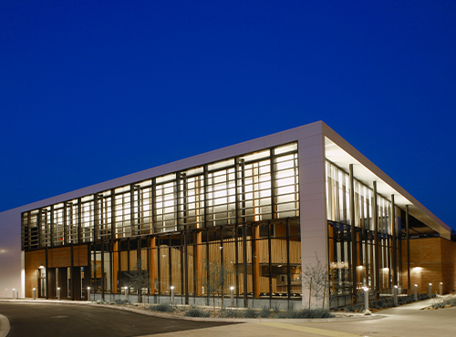
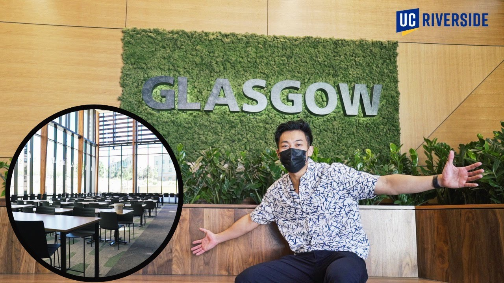
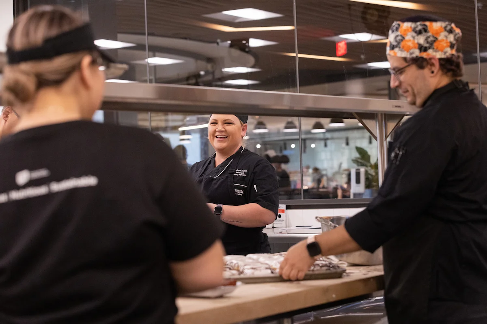
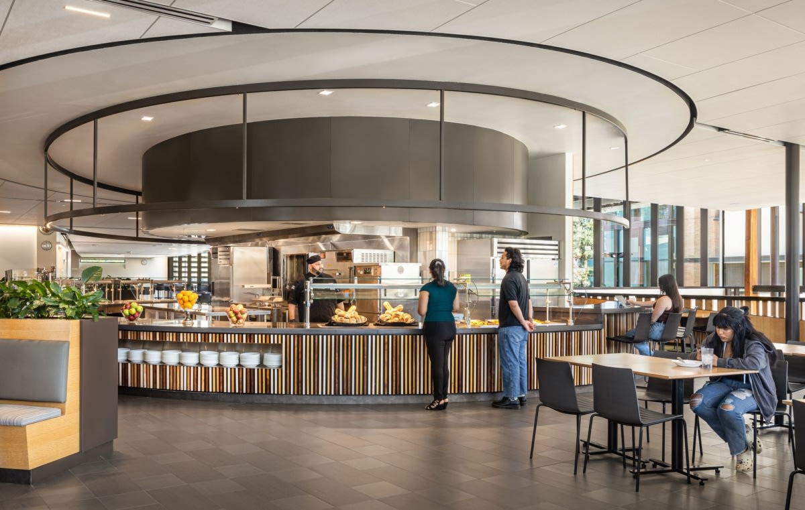
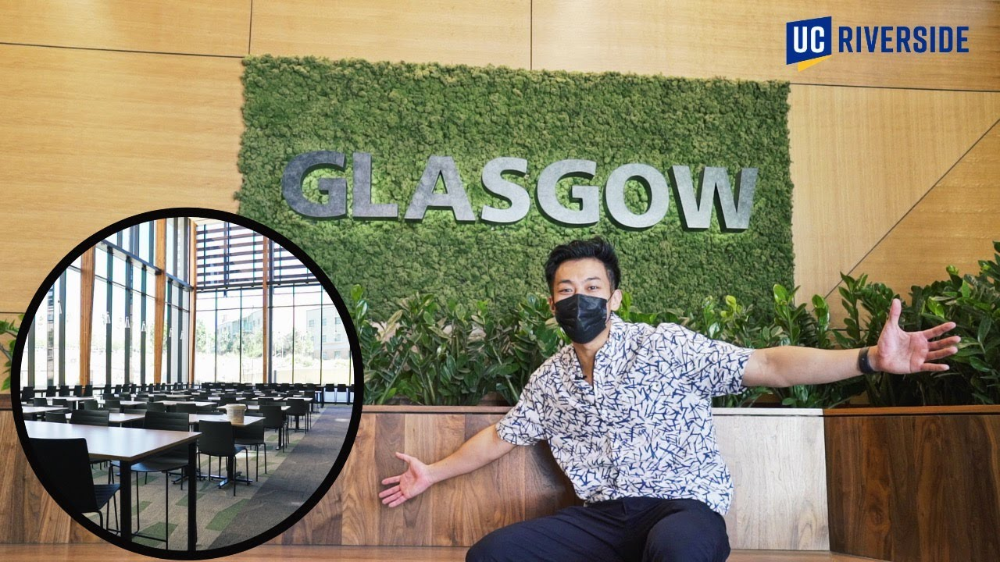
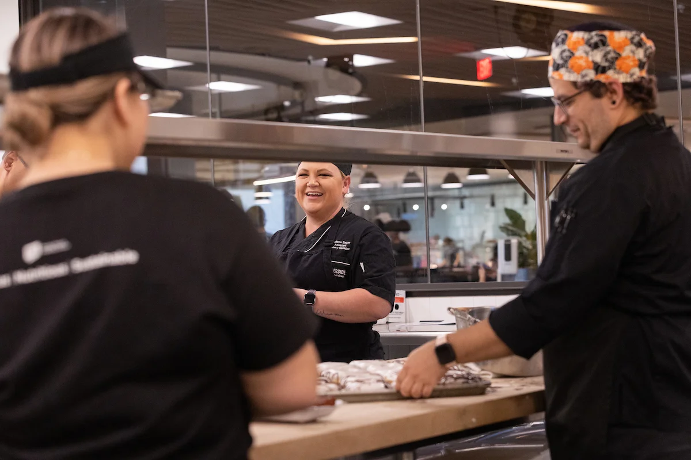
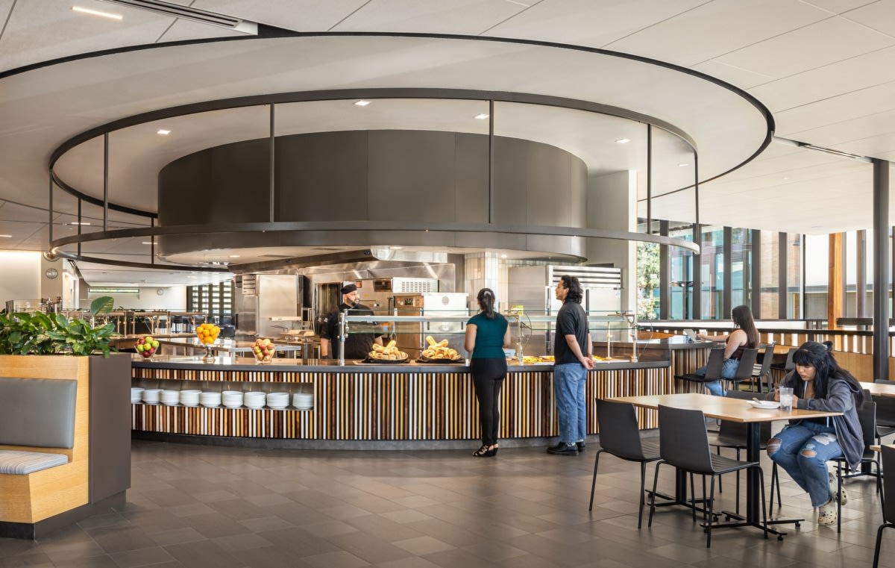

Portfolio





 

I remember my 11-year-old self stumbling upon watching the film “Psycho” for the very first time. I was unprepared, sitting alone in my living room. This sudden wave of chills rushed down my spine from the back of my head as I heard the eerie violins playing as the black and white credits faded in. I felt oblivious, nervous, excited, and curious about what I would see. Who would’ve thought my dormant passion for filmmaking would begin that day? Films have the power to evoke a wide rage of emotions in people, and the specific feelings can vary depending on the genre, and individual preferences. It can make you feel you joy, sadness, fear, and nostalgic.
Hi, my name is Jason Barrios. I am a first-year student who is majoring in Film, Theatre, and Digital Production (TFDP). I was born and raised in Los Angeles, the second youngest of 3 children .Since the start of my journey here at UC Riverside, I have had a clear goal of what I want. That is being able to work in the film industry and bring my appreciation of filmmaking into my own. After completing my bachelor of arts I hope to expand my knowledge even further by throwing myself into the world and exploring my career of becoming a professional cinematographer who captures the visual style and tone of film or video production.A film is a form of art that has the power and ability to transport audiences to different worlds and tell stories in a unique and impactful way. As a viewer, it can be easy to take for granted the amount of work and creativity that goes into making a film, but a true appreciation for filmmaking requires an understanding of the art and craft of the medium.
As a future cinematographer, I hope to enrich and trasform people's lives in various ways. First and foremost, films can be a source of pure joy and entertainment, bringing laughter, excitement, and pleasure to all individuals. I hope to also bring stories of triumph, resilence, and personal growth on the big screen and overall instill a sense of hope and empowerment to overcome people's own challenges. I please to entertain, inspire, educate, and touch the depths, of human emotions. Whether as a form of escape, a catalyst for change, or a source of personal connection, films have the remarkable ability to leave a lasting impact and enrich the lives of those who engage with them.
• A member of NMA club, in which focuses on production skills
• Made videos for school advertisements
• Experience with Photoshop, Adobe Premiere pro
• A student culinary chef
• Responsible for prepping food and servicing of kitchen equipment
• Organizing and managing books
• Lifting and moving shelves, tables, and chairs
• Helping individuals
• Locate appropiate data